Работа со слоем подписей в ArcGIS
Описание удобного способа работы с подписями (annotations) на карте.
Аннотации (annotation) – удобный способ хранения подписей к карте в ArcMap, позволяющий сохранять их на карте не в графическом слое (т.е. непосредственно в проекте), а как картографические объекты. При этом их значительно легче редактировать, перемещать, изменять, привязывать к базовой линии; их можно хранить в географической проекции и подгружать в спроектированный Вид, при этом они будут трансформированы в нужную проекцию «на лету», как и обычные данные. Преимущества такого хранения текстовых данных очевидно.
Слой аннотаций (annotation layer) можно создать двумя способами – экспортом обычных подписей или непосредственным вводом. И в том и в другом случае начинать работу следует с создания базы геоданных – пакетного файла с расширением . mdb, в котором могут храниться аннотации.
Для этого необходимо вызвать приложение ArcCatalog (файл-менеджер ГИС-данных, по структуре организованный как Проводник Windows, рис.1) – либо напрямую, через Пуск-Программы-ArcGis-ArcCatalog, либо кнопкой с панели инструментов ArcMap. Затем выбрать нужный каталог слева, щелкнуть правой кнопкой мыши на его имени, выбрать в меню New – Personal Geodatabase. Она появится в окне справа, тут же ее можно переименовать (например annotation.mdb, рис.2).

Рис.1. Окно ArcCatalog
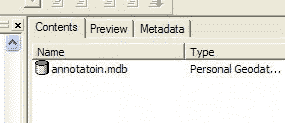
Рис.2. Значок базы геоданных
Вариант 1 – ручной ввод надписей на карту.
Двойным щелчком нужно открыть только что созданную базу геоданных. Она пуста. Выбираем в меню File-New-Feature class. В появившемся диалоговом окне, будет предложено ввести название класса объектов и его тип (рис.3). Здесь нужно ввести название, отметить "This feature class will store annotation features....." (нижний) и выбрать в списке ESRI Annotation Feature, поле Alias можно оставить пустым. Перейдите к следующему окну (рис.4). Здесь будет предложено выбрать базовый масштаб слоя подписей, это очень важно, если вы предполагаете, что при масштабе 1 : 5000000 надпись должна быть сделана шрифтом размером 10 пт, то отображаться шрифтом именно этого размера при выводе на экспорт или печать она будет ТОЛЬКО в этом масштабе, в более крупном будет больше, в более мелком – меньше. Map Units надо поменять на метры. Переходим к следующему окну.
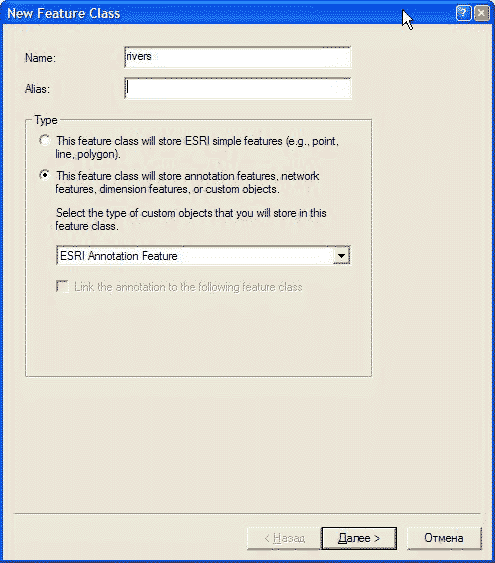
Рис. 3. Создание класса объектов Annotation Layer – 1 диалоговое окно

Рис. 4. Установка базового масштаба Annotation Layer.
Если все надписи в слое будут одного формата, то можно оставить один Annotation class, изменив только его формат инструментами форматирования текста в середине окна. Но, предположим, в данном случае нужно подписать реки так, чтоб крупные и мелкие объекты были подписаны по разному. В этом случае необходимо создать несколько классов аннотаций при помощи кнопки New… и изменения формата шрифта соответствующего класса (рис.5, - создано 2 класса). В нижней части окна можно задать максимальный и минимальный масштабы, при которых надписи будут отображаться.
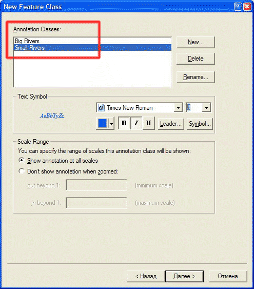
Рис.5. Окно редактирования легенды Annotation Layer – создание разных стилей текста для разных объектов
В следующих двух диалоговых окнах можно все оставить без изменений. Annotation Class создан. Теперь надо задать его систему координат. Для этого в контекстном меню, открывающемся по нажатию правой кнопкой мыши на слое, выбираем Preferences – Fields – поле Shape в списке полей (вверху) – Spatial reference в открывшемся списке свойства поля внизу (рис.6). Для России выбираем систему координат Geographic – Europe – Pulkovo 1942 (или иную в зависимости от того, какова ваша рабочая система координат).
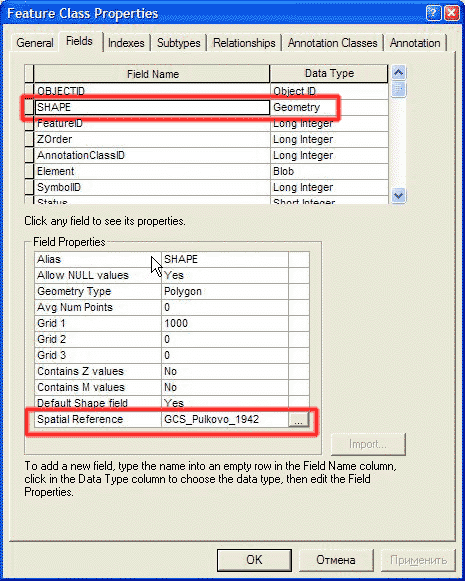
Рис.6. Установка проекции Annotation Layer
Добавляем созданный Annotation Layer в проект и переходим в режим его редактирования. Открываем панель инструментов Annotation: View – Toolbars – Annotation (рис. 7).
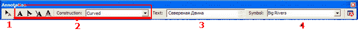
Рис. 7. Панель инструментов Annotation, подписи см. ниже.
- Инструмент Edit. При работе с аннотациями следует пользоваться именно им, а не аналогичным инструментом панели Editor
- Кнопки и поле типа расположения текста
- Поле, куда вводится текст надписи
- Поле выбора класса подписи (легенды слоя)
При ручном вводе подписей работает только расположение текста Curved (текст вдоль кривой). Вводим текст подписи, выбираем нужный класс символа и ведем (рисуем) базовую линию, вдоль которой будет расположен текст (рис. 8).
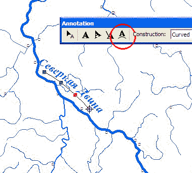
Рис.8. Подписывание по кривой базовой линии.
В дальнейшем можно редактировать положение подписи, преобразовывать ее в горизонтальную или прямую наклонную, изменять базовую линию при помощи контекстного меню, вызываемого правой кнопкой мыши на редактируемом объекте.
Необходимо обратить внимание на редактировании узлов (Sketch) базовой линии. Если предполагается, что впоследствии слой будет экспортирован в графический редактор ( Adobe Illustrator и др.) как текст, а не как кривые, нужно внимательно следить за расположением «рычагов» поворота сегментов линии, у них не должно быть резких отклонений; кроме того, не рекомендуются перегибы линии более 45, максимум 60 градусов. Если не соблюдать эти правила, текст в Adobe Illustrator , весьма вероятно, будет частично «завален» или вообще перевернут. Пример правильного и неправильного форматирования – на рис.9

Рис. 9. Baseline Sketch – слева – корректная, справа – некорректная. Зеленые квадраты – узлы базовой линии, лиловые – «рычаги» поворота сегментов.
Многие параметры подписи можно изменить, вызвав атрибутивную таблицу Annotation Layer. Если понадобилось изменить параметры подписей какого-либо класса, это можно сделать через свойства Annotation Layer в ArcCatalog.
Вариант 2 – экспорт подписей из атрибутивной таблицы темы.
Для создания Annotation Layer на основе атрибутивной таблицы темы, необходимо, чтобы файл базы геоданных был срздан заранее (описано выше). Также необходимо сначала подписать объекты темы в обычном режиме – Layer properties – вкладка Labels – установить флажок на Labell All the features …. (рис. 10).
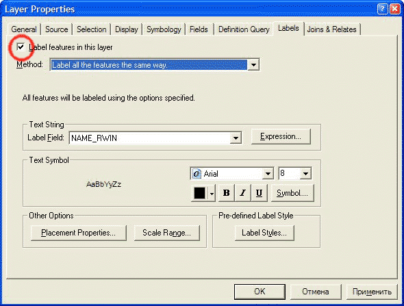
Рис.10. Подписывание объектов слоя.
Так как при экспорте в Annotation Layer необходимо, как правило, выведение всех имеющихся подписей, необходимо также выбрать Placement Properites - Conflict Definition и установить флажок Place Overlapping Labels – разрешить перекрывающиеся подписи, рис. 11, потом их можно будет «развести» вручную. Результат – на рис. 12 - подписана тема городов.
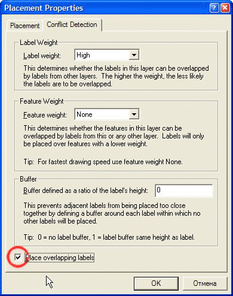
Рис 11. Окно свойств расположения подписей, обведен флажок, разрешающий перекрытие подписей.
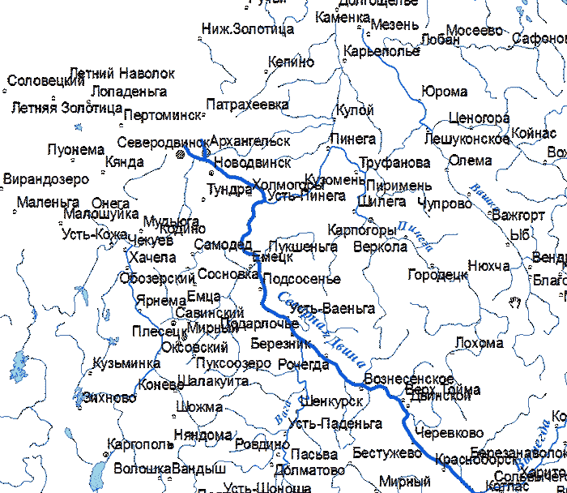
Рис. 12. Фрагмент окна карты с подписями городов
Правой кнопкой мыши щелкаем на названии подписанной темы и выбираем Convert Labels To Annotation. Появится диалоговое окно, показанное на рис. 13. Необходимо выбрать текущую базу геоданных, нажав на значок, обведенный на рис. 13, и задать имя Annotation Layer.
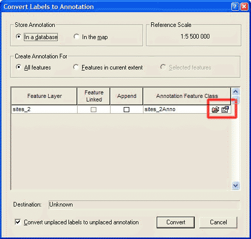
Рис. 13. Окно конвертации подписей объектов темы в Annotation Layer, обведена кнопка выбора места сохранения.
После нажатия Convert происходит генерация Annotation Layer (рис. 14).
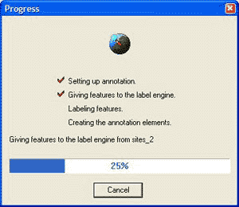
Рис. 14. Процесс конвертации подписей в Annotation.
По окончании конвертации в содержании вида появится новый слой, в котором и находятся теперь подписи. Перейдя в ArcCatalog, можно поменять свойства нового слоя, в частности, установить другую легенду (из нескольких классов подписей) и указать проекцию слоя. Эти операции надо производить при закрытом проекте, в который загружен слой, иначе опции настройки слоя будут недоступны.
Дальнейшие операции с подписями производятся так же, как и было описано выше, кроме того, можно добавлять и новые подписи.
Дата создания: 07.03.2006
Автор: Игорь Поспелов